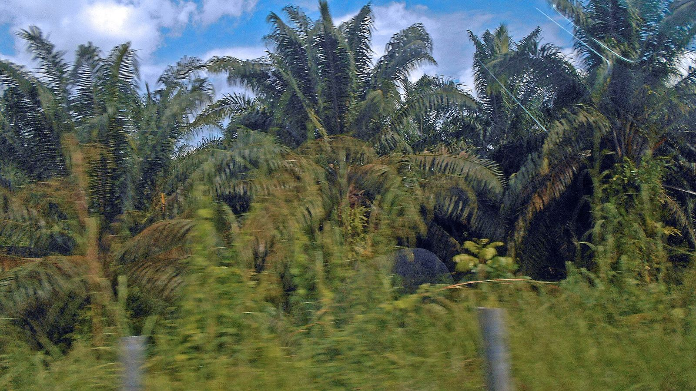
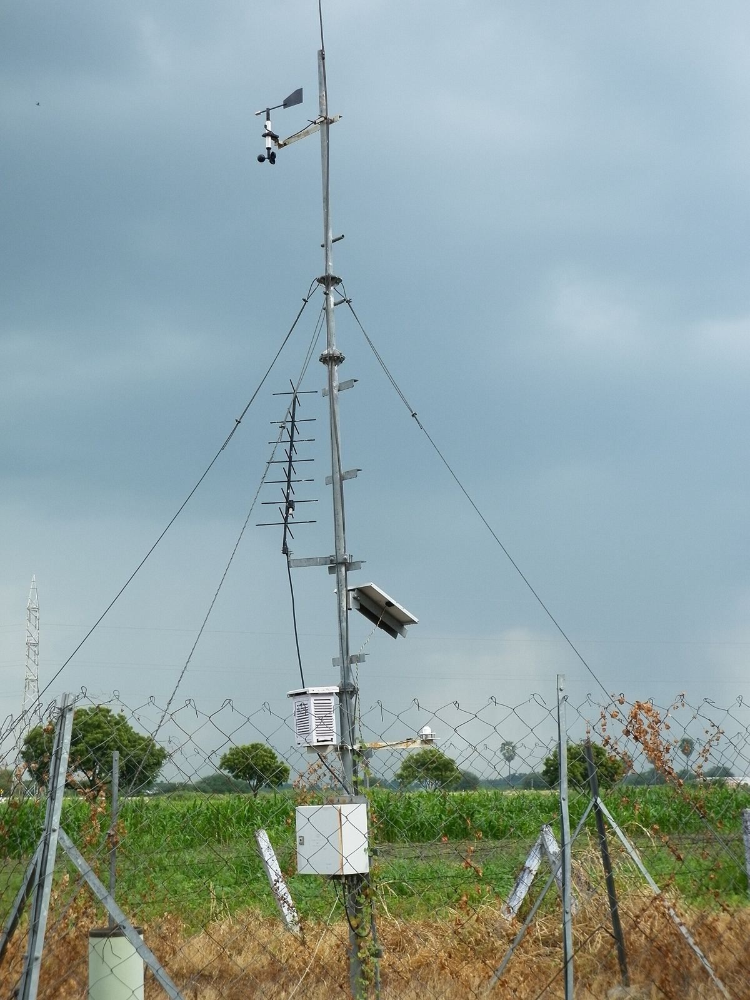
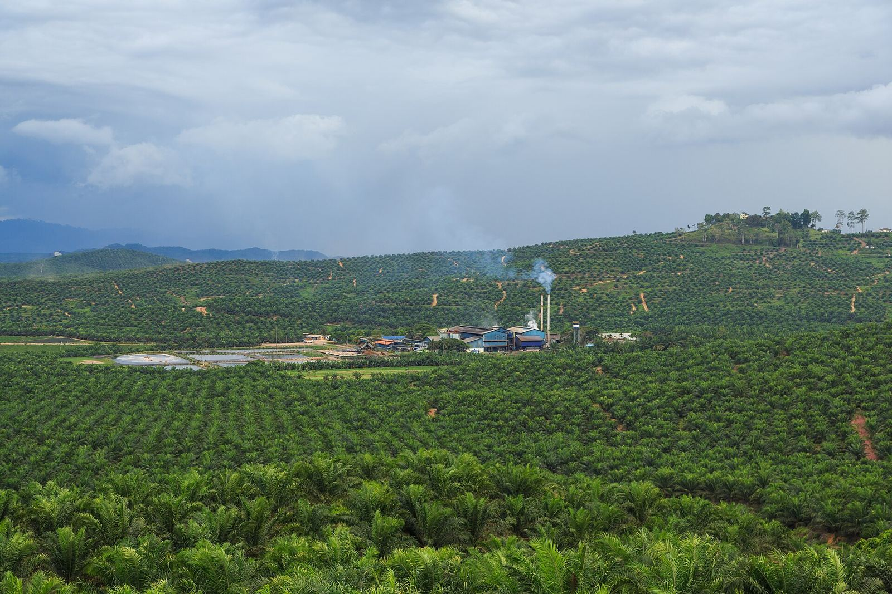

Blok berjauhan
Mandor harus berkeliling untuk tahu kondisi tiap blok. Data dari blok terjauh sering paling jarang dicek.
Sensor perkebunan sawit untuk curah hujan, tanah, muka air, dan cuaca, serta pemantauan tangki dan mesin pabrik kelapa sawit. Data dari blok-blok yang berjauhan tampil di satu dashboard.

Kebun sawit luas, sinyal tidak selalu ada, dan pencatatan manual sering terlambat sampai ke kantor. Akibatnya keputusan dibuat berdasarkan perkiraan.
Mandor harus berkeliling untuk tahu kondisi tiap blok. Data dari blok terjauh sering paling jarang dicek.
Di lahan gambut, muka air di parit perlu dijaga. Terlalu kering rawan terbakar, terlalu basah mengganggu akar dan panen.
Curah hujan berbeda antar blok. Tanpa data per lokasi, jadwal pemupukan dan perawatan jalan sulit direncanakan.
Level tangki dan kondisi mesin di pabrik kelapa sawit dicek manual, sehingga gangguan baru ketahuan setelah terjadi.
Setiap sensor menjawab satu pertanyaan. Kami bantu memilih sensor yang benar-benar dibutuhkan, bukan sebanyak mungkin.
Mencatat curah hujan per blok secara otomatis, sebagai dasar jadwal pemupukan dan perawatan.
Menunjukkan apakah tanah terlalu kering atau terlalu basah di sekitar akar.
Memantau muka air di parit dan kanal, terutama di lahan gambut, dengan alarm saat melewati batas.
Gambaran kondisi mikro di kebun, pembibitan, atau gudang.
Hujan, suhu, kelembapan, angin, dan radiasi matahari dalam satu tiang, dengan panel surya untuk lokasi tanpa listrik.
Mengukur isi tangki air, solar, atau minyak dari atas tanpa menyentuh cairan.
Data dari semua sensor dikumpulkan dan ditampilkan di satu dashboard yang bisa dibuka dari HP atau komputer, di kebun maupun di kantor. Isinya dibuat sesuai kebutuhan Anda, misalnya:

Di pabrik kelapa sawit, gangguan kecil pada pompa, konveyor, atau tangki bisa menghentikan proses. Kami membantu memantau level tangki, arus listrik, dan getaran mesin, serta membuat atau memperbarui panel PLC dan HMI untuk proses yang masih dijalankan secara manual.
Data dari pabrik bisa ditampilkan di dashboard yang sama dengan data kebun, sehingga manajemen melihat gambaran yang utuh.

Pilihan jaringan ditentukan setelah kami melihat lokasi. Ceritakan kondisi sinyal di kebun Anda saat menghubungi kami, dan kami jelaskan pilihan yang masuk akal.
Tidak selalu. Untuk lokasi tanpa listrik, perangkat bisa memakai panel surya dan baterai. Kebutuhannya kami hitung saat merencanakan sistem.
Bisa, dan sering lebih baik begitu. Mulai dari blok yang paling penting, lihat manfaatnya, lalu kembangkan ke blok lain.
Harga bisa dinego dan tergantung luas kebun, jumlah titik sensor, dan kondisi lokasi. Chat kami dengan gambaran singkat kebun Anda, dan kami balas dengan penawaran.
Ceritakan lokasi kebun atau pabrik Anda dan apa yang ingin dipantau. Kami balas dengan saran dan penawaran.